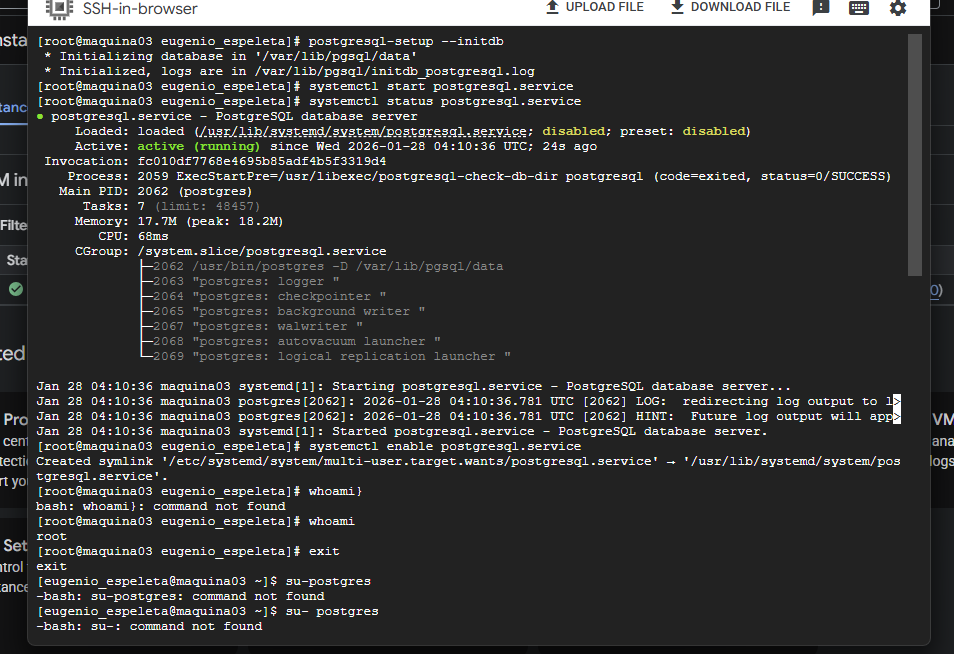
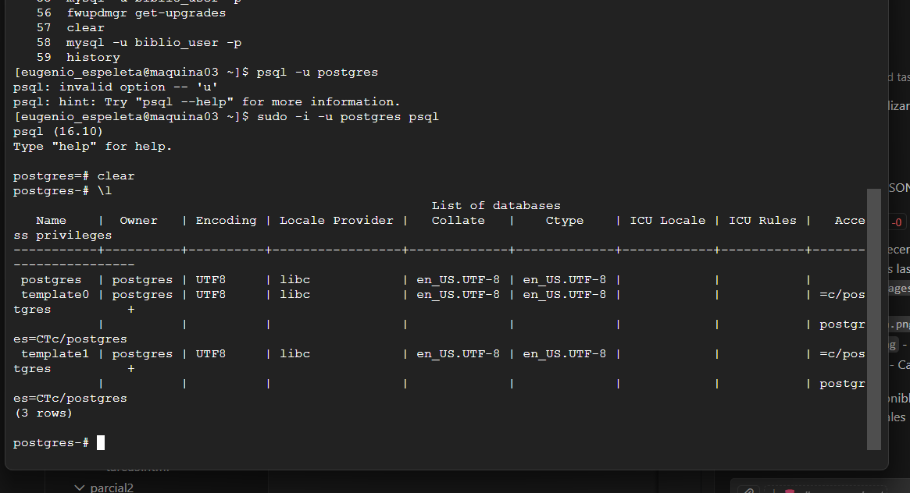
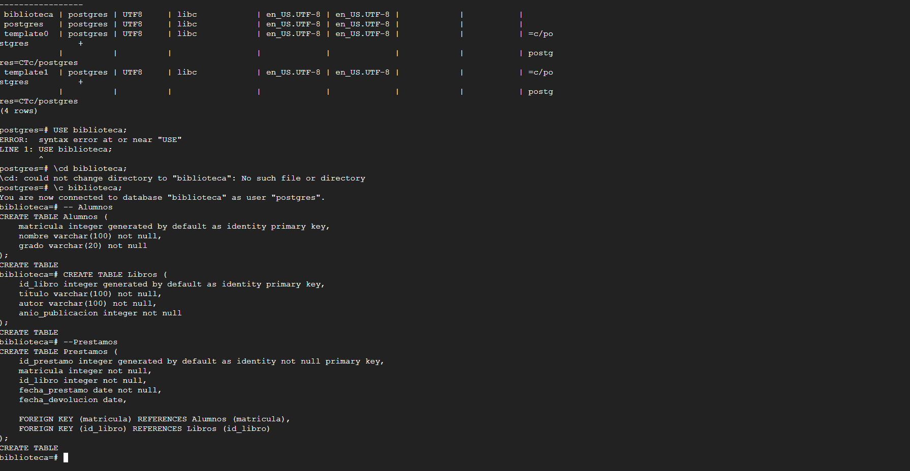

🎯 Objetivo
Instalar y configurar PostgreSQL (un sistema gestor de bases de datos relacional de código abierto) en la máquina virtual de Google Cloud. Se enfatiza la creación de usuarios, configuración de permisos, diseño de esquemas de bases de datos y ejecución de comandos DDL y DML en PostgreSQL.
💡 Conceptos Clave
PostgreSQL
Sistema gestor de bases de datos relacional de código abierto muy poderoso. Ofrece características avanzadas como herencia de tablas, tipos de datos personalizados y procedimientos almacenados.
Instalación en Linux
Proceso de instalación de PostgreSQL en sistemas Linux (CentOS/RHEL) usando gestores de paquetes. Incluye configuración inicial y arranque del servicio.
Usuario PostgreSQL
Creación de usuarios y roles en PostgreSQL para controlar el acceso a las bases de datos. Cada usuario puede tener permisos específicos sobre tablas y objetos.
DDL (Data Definition Language)
Comandos para crear, modificar y eliminar estructuras de datos (CREATE TABLE, ALTER TABLE, DROP TABLE). Define el esquema de la base de datos.
DML (Data Manipulation Language)
Comandos para insertar, actualizar y eliminar datos (INSERT, UPDATE, DELETE). Manipula el contenido de las tablas.
Psql - Cliente PostgreSQL
Herramienta de línea de comandos interactiva para conectarse y gestionar bases de datos PostgreSQL. Permite ejecutar comandos SQL directamente.
✓ Evidencia de Aprendizaje
Instalación de PostgreSQL
Instalación exitosa de PostgreSQL 12+ en la máquina virtual de Google Cloud.
Configuración del Servicio
Servicio PostgreSQL arrancado y configurado para iniciar automáticamente en el boot.
Creación de Usuarios
Creación de nuevos usuarios PostgreSQL con permisos específicos para conexión remota.
Diseño de Esquema
Creación de tablas relacionales con integridad referencial y tipos de datos apropiados.
Ejecución de Comandos
Ejecutar comandos DDL, DML y consultas complejas en PostgreSQL.
📸 Evidencia de Implementación
Paso 1: Instalación de PostgreSQL
Se instaló PostgreSQL en la máquina virtual usando el gestor de paquetes yum. Este proceso incluye la descarga de repositorios oficiales y compilación de dependencias:
# Actualizar sistema
sudo yum update -y
# Instalar repositorio PostgreSQL
sudo yum install -y https://download.postgresql.org/pub/repos/yum/reporpms/EL-7-x86_64/pgdg-redhat-repo-latest.noarch.rpm
# Instalar PostgreSQL 12
sudo yum install -y postgresql12-server postgresql12-contrib
# Inicializar la base de datos
sudo /usr/pgsql-12/bin/postgresql-12-setup initdb
# Iniciar el servicio
sudo systemctl start postgresql-12
sudo systemctl enable postgresql-12Paso 2: Configuración de Usuario y Conexión
Después de la instalación, se configuró el usuario PostgreSQL y se permitió la conexión remota:

Figura 1: Verificación de instalación de PostgreSQL y estado del servicio
Paso 3: Creación de Tablas Relacionales
Se crearon las mismas tablas que en MariaDB, pero adaptadas a la sintaxis y características de PostgreSQL:
-- Crear tabla de usuarios
CREATE TABLE usuarios (
id SERIAL PRIMARY KEY,
nombre VARCHAR(100) NOT NULL,
email VARCHAR(100) UNIQUE NOT NULL,
fecha_registro TIMESTAMP DEFAULT CURRENT_TIMESTAMP,
activo BOOLEAN DEFAULT TRUE
);
-- Crear tabla de productos
CREATE TABLE productos (
id SERIAL PRIMARY KEY,
nombre VARCHAR(150) NOT NULL,
descripcion TEXT,
precio DECIMAL(10, 2) NOT NULL,
usuario_id INTEGER NOT NULL,
fecha_creacion TIMESTAMP DEFAULT CURRENT_TIMESTAMP,
FOREIGN KEY (usuario_id) REFERENCES usuarios(id) ON DELETE CASCADE
);
-- Crear índices para optimización
CREATE INDEX idx_usuarios_email ON usuarios(email);
CREATE INDEX idx_productos_usuario ON productos(usuario_id);
-- Insertar datos de prueba
INSERT INTO usuarios (nombre, email) VALUES
('Juan Pérez', 'juan@example.com'),
('María García', 'maria@example.com');
-- Consulta con JOIN
SELECT u.nombre, COUNT(p.id) as cantidad_productos
FROM usuarios u
LEFT JOIN productos p ON u.id = p.usuario_id
GROUP BY u.id, u.nombre;Paso 4: Conexión y Consultas
Acceso al cliente psql y ejecución de consultas directas a la base de datos:

Figura 2: Cliente psql conectado y ejecutando consultas DDL/DML
Paso 5: Resultados y Validación
Validación de tablas creadas, usuarios configurados e integridad de datos en PostgreSQL:

Figura 3: Verificación de tablas creadas y resultados de consultas
📋 Conclusiones
📚 Aprendizajes Principales
He aprendido a instalar y configurar PostgreSQL en Linux, crear y gestionar usuarios con permisos específicos, diseñar esquemas de bases de datos relacionales con integridad referencial, y ejecutar consultas complejas usando DDL y DML en PostgreSQL.
⚠️ Desafíos Encontrados
La configuración de permisos de conexión remota requería modificar archivos de configuración (pg_hba.conf). Las diferencias sintácticas entre MariaDB y PostgreSQL (como SERIAL en lugar de AUTO_INCREMENT) requirieron ajustes en los scripts SQL.
🎯 Mejoras Futuras
Implementar replicación de PostgreSQL, configurar backup con pg_dump, explorar características avanzadas como Window Functions y Common Table Expressions (CTEs), y aprender a optimizar consultas con EXPLAIN ANALYZE.